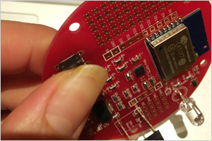
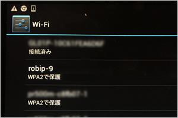

Robip（ロビップ）は、タブレット又はパソコンから、Wifi経由でHaLake Kit（ハレイク キット）に書き込める新しいプログラミングソフトです。
プログラムをしたら、HaLake Kitが光ったり動く。おもちゃを買う時代から自分で作る時代へ。
Robipはプログラムの知識が無い方でもすぐ遊べる様に視覚的な操作でプログラミングを作る事ができます。
Robipをつかってみよう
現在、Robip β版を提供しております。

【1】Google Playから、アプリをダウンロードしてください。
【2】アプリを立ち上げると、ログイン画面が表示されますので、新規登録か、Facebookでログインかを選んでください。

【3】ログインをすると、「entry point」と記載されたキャンバスが表示されます。

【4】まず、HaLake KitにWi-Fiの設定を書き込みます。アプリの右端のボタンをクリックして、設定を選びます。

【5】設定画面にて、RobipIDと、使用するWi-Fiを入力します。※Wi-Fiは複数設定する事が可能です。
【6】設定画面を閉じ、今度は「Wi-Fi設定を転送」をクリックします。
【7】「Wi-Fi設定を転送」をクリックすると上記の様なダイアログが表示されます。そのままの状態でタブレットのWi-Fi設定を開きます。※アプリは落とさないでください。

【8】HaLake Kitの電源を入れ、3秒以内にHaLake Kitのボタンを3回クリックします。

【9】タブレットのWi-Fi設定にHaLake KitのID（HaLake ID）が表示されるので選びます。
【10】Wi-Fiの設定をRobip IDに設定した状態でアプリに戻り、「OK」をクリックします。

【11】しばらく待つと「更新しました！」と表示されれば、HaLake KitにWi-Fiの設定が書き込まれた証拠です。

【12】タブレットのWi-Fi設定からHaLake IDを外しても大丈夫です。※HaLake KitにWi-Fiの設定が書き込まれますので、HaLake Kitに通電すれば設定したWi-Fiに接続します。

【13】アプリでプログラムを作ります。※写真の様にブロックを組み合わせるとLEDを光らせるプログラムになります。
【14】右上の「ビルド」ボタンをクリックするとビルドログ画面が表示され「ビルドを終了しましたHaLake Kitの電源を入れなおして30秒程お待ち下さい。」と表示されます。
【15】HaLake Kitの16番ピンと、GNDにLEDを取り付け、電源を入れます。15秒程待つとプログラムが更新されLEDが点灯します。
早速、Google Playからダウンロード
プログラミングソフトRobip（ロビップ）は、現在Google Playから、無料でダウンロード頂けます。
プログラミング教室・ワークショップ毎週開催！
コワーキングスペースHaLake（ハレイク）では、毎週プログラミング教室やワークショップを開催しております。
大人も子供も一緒になってプログラミングの勉強をしております。皆さんに「子供がプログラミングを理解できるのか？」とご相談を受けますが、子供の方が頭が柔軟で、教えられるだけではなく自分なりの方法を試して理解します。
特にHaLakeでは、パソコンの世界でプログラムが動くのを見て理解をするよりは、実際に自分の作ったプログラムでLEDを付けたり消したりする。モーターを回して扇風機を作る等、動くものを作る事でより興味をもってプログラミングを行なう仕組みを取り入れてます。
是非一度、コワーキングスペースHaLakeにお越しください。